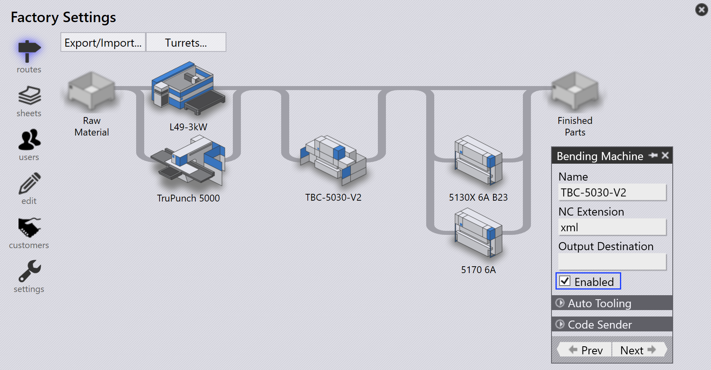
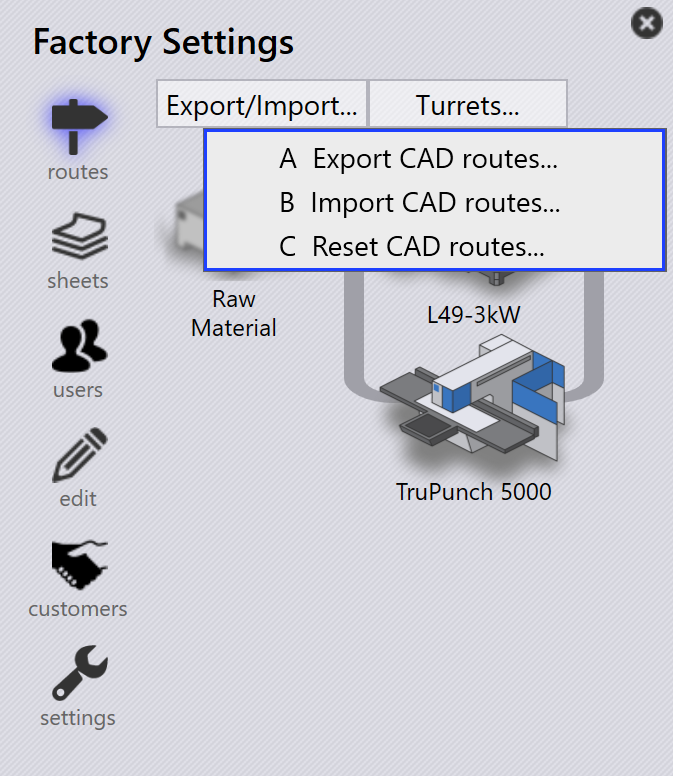

Trasy
Na základě vaší licence bude TruSmartCAM mít výchozí sadu CAM strojů a konfiguracíd tras. Tyto konfigurace můžete přizpůsobit vašim specifickým výrobním postupům.

Na stránce tras jsou stroje reprezentovány jako zpracovatelské stanice, každá identifikována obrázkem a názvem.
Trasy propojují stanice a zobrazují možné cesty pracovního postupu, kterými může součást procházet od začátku do konce. Vlastnosti stanice můžete zobrazit najetím na stanici myší.
Kliknutím na stanici se otevře panel s podrobnými informacemi o této stanici, včetně jejího názvu, typu a stavu dostupnosti.
-
Pro úpravu dostupnosti stanice klikněte na stanici a přepněte zaškrtávací políčko _Umožněno v panelu.
Export/Import konfigurace tras
Funkce Export/Import umožňuje uživatelům uložit jejich aktuální konfigurace tras a aplikovat je na jiné projekty nebo instance.

Export CAD tras
Klikněte na Export CAD routes… pro uložení všech aktuálních pravidel podmínek tras do CSV souboru.

CSV obsahuje materiály a jejich podmínky trasování. Sloupce představují názvy strojů a podmínky (např. Material, SpecialTool, HasBend, MaxBendLength). Hodnota 1 označuje trasování na stroj; prázdná buňka znamená žádné trasování.
Tento CSV soubor můžete upravit a znovu importovat do systému.
Import CAD tras
Použijte Import CAD routes… pro aplikaci upraveného CSV souboru.
| Před importem spusťte Reset CAD routes pro vymazání existujících konfigurací. |
Systém přečte soubor a aktualizuje podmínky tras. Pravidla mohou zahrnovat podmínky jako HasBend a MaxBendLength.

Pokud HasBend = 1, pravidlo se aplikuje na součásti s ohyby.
Pokud MaxBendLength = 1, pravidlo dále omezuje na základě nejdelšího ohybu součásti.
Součást 00.13 má nejdelší ohyb 500 mm. Odpovídá prvnímu pravidlu, takže TBC-5030-V2 je vyloučen.

Součást 00.20 má nejdelší ohyb 600 mm. Neodpovídá prvnímu pravidlu a řídí se druhým pravidlem, směruje na všechny stroje.

Reset CAD tras
Použijte Reset CAD routes pro vymazání všech existujících konfigurací před importem nového CSV.
| Pokud importujete bez resetování, stará pravidla mohou být v konfliktu s novými. |